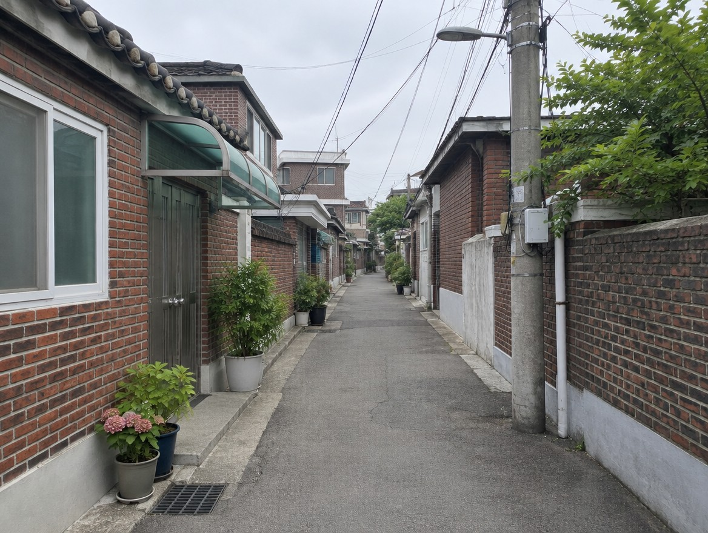
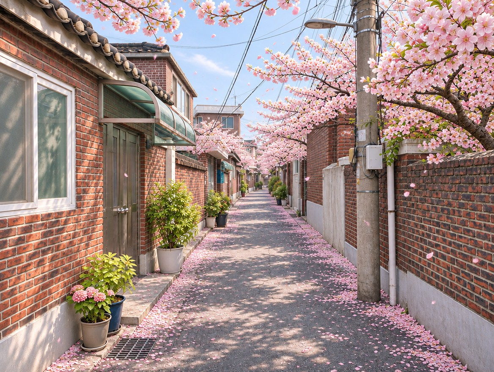
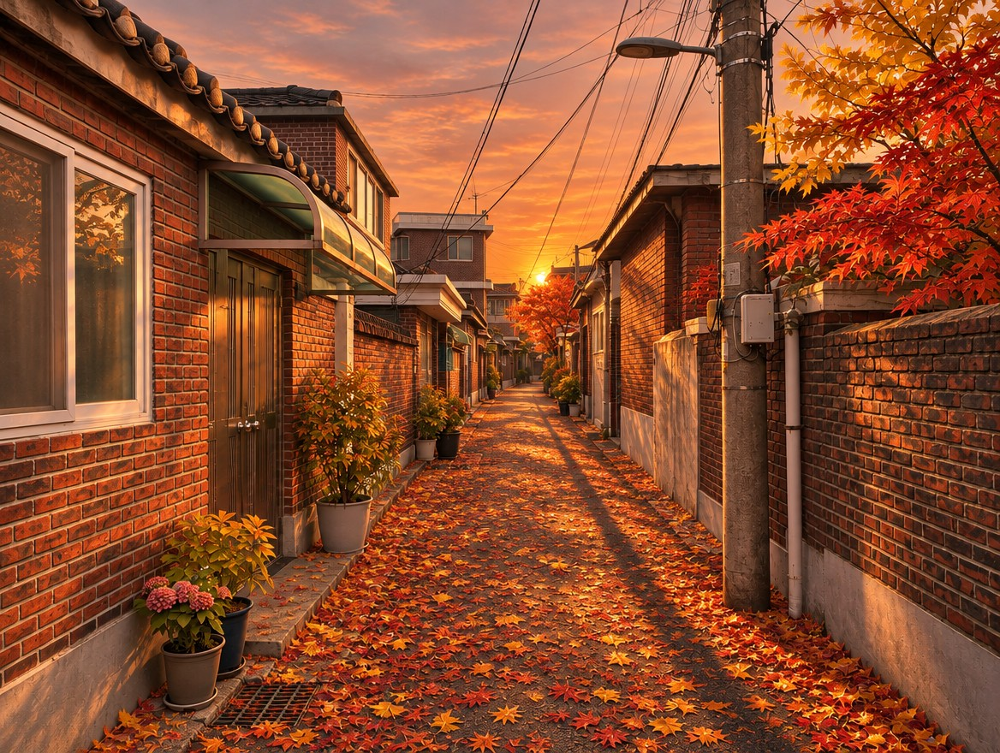

AI 문방구 · 계절 바꾸기 5
평범한 골목 사진
→ 계절만 5번
댓글로 신청해주셔서 고마워요. 영상 속 사진은 전부 힉스필드(GPT Image 2.6)에 골목 사진 한 장을 넣고 계절 문장만 바꿔 만든 결과예요. 가게 앞이나 동네 사진으로 해보세요.
BASE원본 골목 사진 (전)

01spring
벚꽃 흩날리는 길
벚나무가 담장 위로 피고 바닥에 꽃잎이 깔려요.
전

후The exact same street with the same buildings and camera framing, but in spring: cherry blossom trees in full bloom, pink petals falling and scattered on the ground, bright soft sunlight. No people, no text, no logos
02summer rain
젖은 바닥에 불빛
소나기에 젖은 바닥이 창문 불빛을 비춰요.
전
후
The exact same street with the same buildings and camera framing, during a heavy summer rain shower at dusk, wet glossy pavement with puddles reflecting warm window lights and a street lamp, rain streaks. No people, no text, no logos
03autumn sunset
단풍과 노을
단풍잎이 바닥을 덮고 해가 골목 끝으로 져요.
전

후The exact same street with the same buildings and camera framing, in autumn at sunset: red and orange leaves on trees and covering the ground, warm golden low sunlight and long shadows. No people, no text, no logos
04snowy night
가로등 아래 눈
지붕과 길에 눈이 쌓이고 창문에 불이 켜져요.
전
후
The exact same street with the same buildings and camera framing, on a snowy winter night: thick fresh snow on roofs and ground, snowflakes falling, warm glowing street lamp, deep blue night sky. No people, no text, no logos
05misty dawn
영화 첫 장면
골목 끝이 안개로 사라지는 푸른 새벽이 돼요.
전
후
The exact same street with the same buildings and camera framing, at blue-hour dawn in thick fog, the far end fading into mist, cool desaturated blue tones, cinematic film still mood. No people, no text, no logos
HOW내 사진으로 하는 법
건물이 잘 보이게 눈높이에서 찍은 사진을 올리고 아래 문장의 [ ]만 바꾸면 돼요. "the exact same street"와 "same camera framing"을 넣어야 구도가 그대로 남아요.
The exact same street with the same buildings and camera framing, but [계절·시간·날씨]. No people, no text, no logos